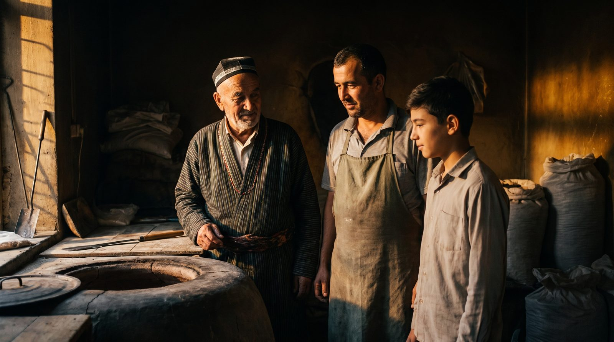
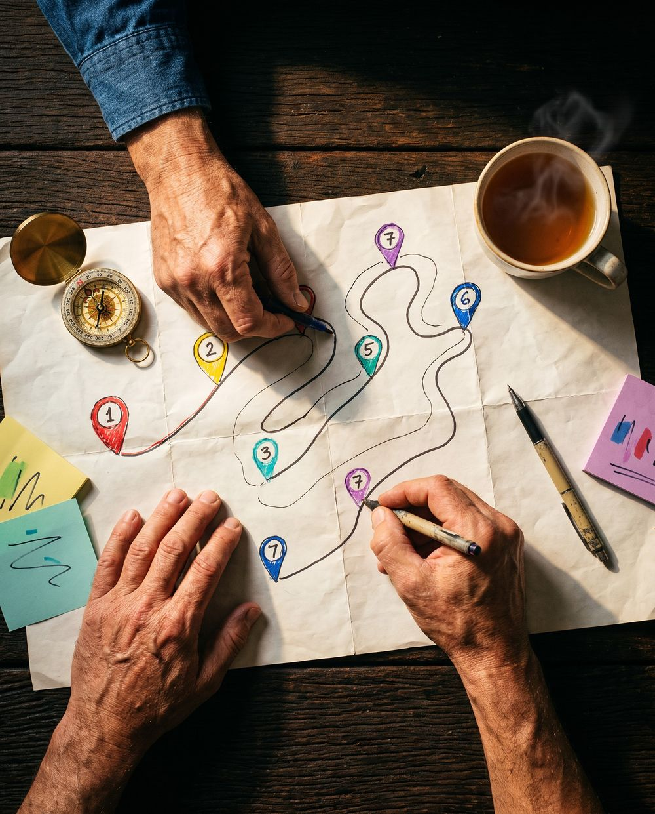
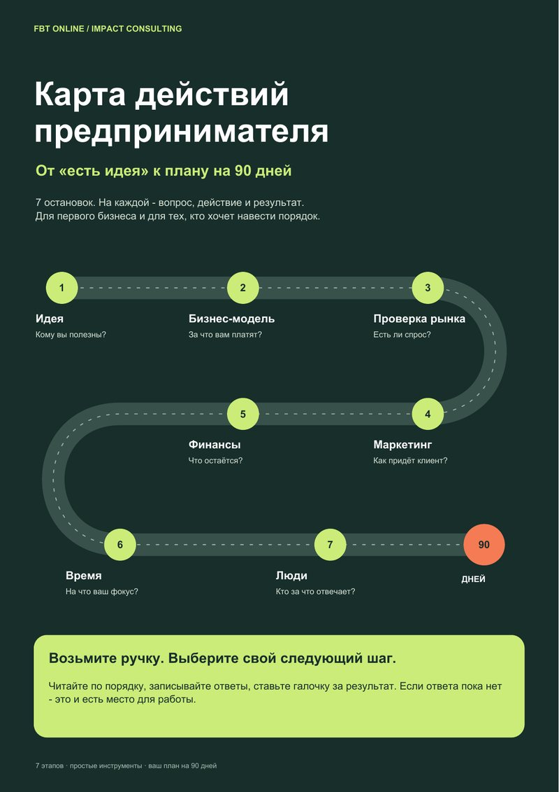

01Производство
Купили оборудование, наладили выпуск, а продаж и прибыли меньше, чем ждали.
Семья Любы тоже вложила всё: продали машину, заняли ещё денег и купили оборудование за €40 000 — и чуть не потеряли всё. Как они выбрались из этой ситуации и с чего начать именно вам — смотрите в видеоразборе.

Демо-плеер: видео ещё не загружено. Для проверки ускорьте: добавьте к адресу ?demo=60.

PDFПошаговый план развития бизнеса из 7 шагов: от первых клиентов до стабильных продаж за 90 дней.
Откроется в конце видео · осталось 03:00
Пошаговый план развития бизнеса из 7 шагов: от первых клиентов до стабильных продаж за 90 дней.
5 минут. Бесплатно. Ответьте на 10 простых вопросов — и наш куратор Александр поможет разобраться, что сейчас мешает вашему бизнесу: где теряются клиенты и деньги, и какой шаг сделать первым — прежде чем снова тратить.
Бот не прислал карту? Открыть бот ещё раз
Вы открыли бизнес, вложили деньги и хотите, чтобы он начал приносить прибыль.

01Купили оборудование, наладили выпуск, а продаж и прибыли меньше, чем ждали.
 02
02
Товар закуплен, полки полные, а покупателей и оборота мало.
 03
03
Аренда, ремонт, мастера и персонал, а клиентов не хватает.
Другая сфера? Видеоразбор и диагностика подойдут и вам: в любом бизнесе деньги, клиенты и команда устроены похоже.


← листайте →
Это нормальный этап, а не личная неудача. Через него проходят все предприниматели.
И это можно исправить. Мы сами через это прошли — и знаем, с чего начать.

Продали машину, заняли у родителей и друзей и купили немецкое оборудование для зуботехнической лаборатории.
Всего одна ошибка — и пришлось бы вызывать мастера из Германии и платить €5 000, когда мы и так по уши в долгах.
Мы приехали в Казахстан на тренинг, чтобы просить инвестиции у тренеров из Швейцарии. Денег нам не дали, зато научили, как вести бизнес. Это было лучшее решение.
Одна фраза с тренинга перевернула мышление. Сегодня их лаборатория — в тройке лучших в Узбекистане.
Живые видео от выпускников FBT. Листайте вбок и нажмите, чтобы посмотреть.
9 минут: как семья Любы вышла из похожей ситуации и с чего начать вам.

Пошаговая инструкция: от первых клиентов до стабильных продаж
10 вопросов, 5 минут. Поможет понять:
Куратор Александр посмотрит ответы и запишет голосовой разбор в Telegram:
← листайте →
 Закрытый разбор
7 мест
Закрытый разбор
7 мест
Каждый ваш шаг на сайте и в Telegram-боте приносит артефакт. Соберите все 6 — и попадёте на закрытый бизнес‑разбор с Любой Бэй.
Пошаговый план развития бизнеса из 7 шагов: от первых клиентов до стабильных продаж за 90 дней.
Откроется в конце видео · осталось 03:00
Пошаговый план развития бизнеса из 7 шагов: от первых клиентов до стабильных продаж за 90 дней.
Бот не прислал карту? Открыть бот ещё раз